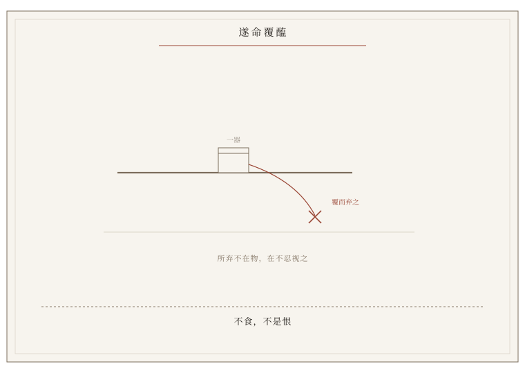

檀弓上 · 三·七 · 第 210 课
孔子哭子路于中庭。有吊者，夫子拜之。既哭，进使者而问故。使者曰「醢之矣」，遂命覆醢。注「寝中庭也，与哭师同，亲之」「为之主也」「覆，弃之，不忍食」。
说什么事：一个哭的位置，一句死的形状，一个覆的动作。
落在哪一层：礼，兼及礼意。论师弟之恩与不忍之情。
为何编在此位：上节以坟崩见悔，此节以哭位见恩。檀弓上的丧礼诸事，自此由制度转入人情。
【经】孔子哭子路於中庭。有人弔者，而夫子拜之。既哭，進使者而問故。使者曰：「醢之矣。」遂命覆醢。
【注】寢中庭也；與哭師同，親之。為之，主也。使者，自衛來赴者。故，謂死之意狀。時衛世子蒯聵篡輒而立，子路死之；醢之者，示欲啗食以怖眾。覆，棄之，不忍食。
【疏】此一节论师资之恩，兼明子路死之意状。注「寝中至亲之」：下文云「师，吾哭诸寝」，今「哭子路于中庭」，故云「与哭师同，亲之」；若其不亲，当哭于寝门外，与朋友同，故下云「朋友，哭诸寝门外」。案《奔丧》云「师于庙门外」者，谓周礼也，下文据殷法也。注「故谓死之意状」：案哀十五年《左传》云「孔子闻卫乱，曰：柴也其来，由也其死矣」，则是预知；所以进使者问故者，以子路忠而好勇，必知其死难，但不知其死之委曲，更问之也。注「时卫至怖众」：案哀十五年《左传》云，蒯瞶潜入孔悝之家，与伯姬「迫孔悝于厕，强盟之，遂劫以登台。子路入，逐之至台下，且曰：太子无勇，若燔台半，必舍孔叔」，太子闻之惧，下石乞、盂黡敌子路，以戈击之，断缨；子路曰「君子死，冠不免」，遂结缨而死。
中庭 注「寝中庭也」。哭师之位；哭朋友则在寝门外。
为之地主 夫子为之主，故代其拜吊者。
问故 问其死之委曲形状。
醢 肉酱。酷刑，斫身而醢之。
覆 注「弃之」。翻覆而弃，不忍食。
孔子在寝的中庭哭子路。有来吊者，夫子代拜。哭毕，召使者上前问其死之形状。使者说：「已被醢了。」夫子便命把案上之醢翻倒弃去。
此节三事六十余字，而礼、情、义俱在。哭于中庭，是与哭师同位（亲之）；代拜吊者，是为之属主；进使者问故，是不忍知其然却不得不问；命覆醢，是不忍其物在案。郑注三句，句句点题：一曰「亲之」，一曰「主也」，一曰「不忍食」。古人不写悲字，只写位置、写动作，读之则悲在其中。
第一层 哭之位即亲之之度 礼有定所：哭师诸寝，哭朋友诸寝门外。子路是弟子，当哭于寝门外；而夫子哭于中庭，与师同。郑注「与哭师同，亲之」，是全节最重一句。一个晚辈的死，夫子把他放在老师的位置上哭。礼之亲疏，不以名定，而以情之实定。
第二层 为之主 「有人吊者，而夫子拜之」。疏以「为之主」解。师弟之间本无服制上的主名，夫子自任其主：代受吊、代行礼。此即礼所谓「无服而为之服」的另一面——不以服见，而以主见。
第三层 问故之难 《左传》载孔子闻卫乱即曰「柴也其来，由也其死矣」，是早已预知。既预知，仍要「进使者而问故」：所问者不是死与未死，是死之委曲。人于至痛之事，往往偏要知道最细的那一层，明知其苦而不得不问。
第四层 覆醢 使者一句「醢之矣」，夫子一句「覆醢」。郑注「覆，弃之，不忍食」。此非恨卫人，亦非怒其刑，是不忍让那一器东西留在案上。礼之末节，常在此类小动作上：不食，不视，不置。一个动作，抵千言。
与今日何干 闻凶讯时人常问「到底怎么回事」，问完又悔。此节说明这不是失礼，是人之常。而后那一「覆」，更可学：有些东西该从眼前拿走，不必解释，不必声张。
| 左 | 右 |
|---|---|
| 哭于中庭 | 与哭师同，亲之 |
| 哭朋友则在寝门外 | 位以情定，不以名定 |
| 有人吊而夫子拜之 | 为之主也 |
| 进使者而问故 | 预知其死，仍问其状 |
| 使者曰醢之矣 | 示欲啖食以怖众 |
| 遂命覆醢 | 弃之，不忍食 |
画一间寝的中庭，视点略俯。中庭空阔，地面中央铺一小片席，席上无人，只有衣袂的折痕，示「哭于此」。席右前方一张矮案，案上置一只带盖的食器（器盖微开），案边地面有一小片深色湿痕（示覆弃之物）。庭左一门，门扇半掩，门槛外立一位来吊的使者（侧身、拱手、衣色深），面向中庭。庭上无灯，只从门缝透入一道光。不写文字、不画第二人。赭色只用在案边那片湿痕与食器的盖上。
